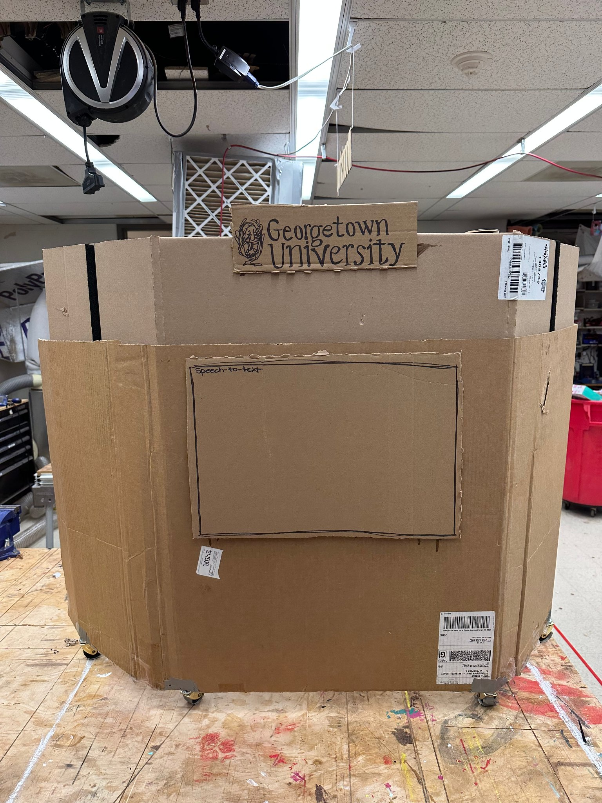
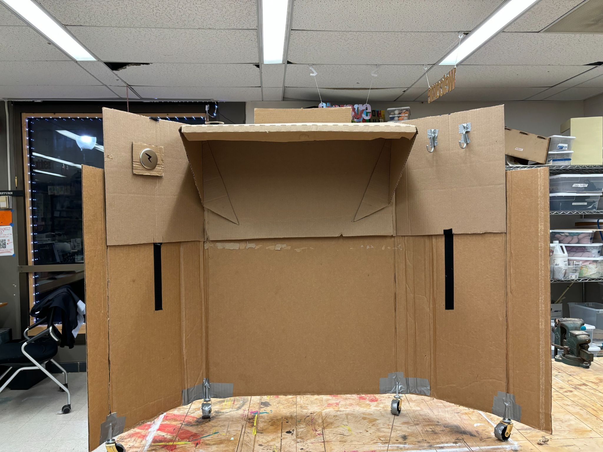
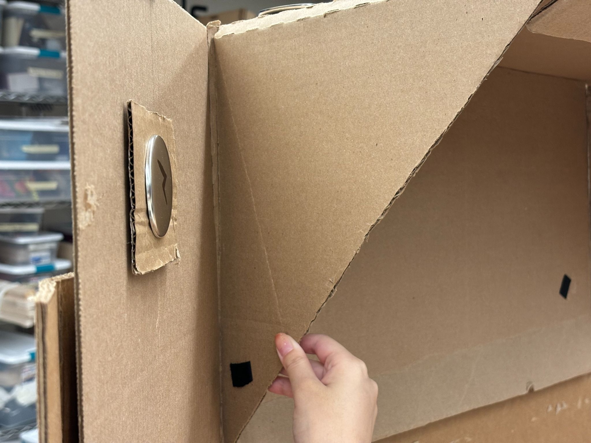
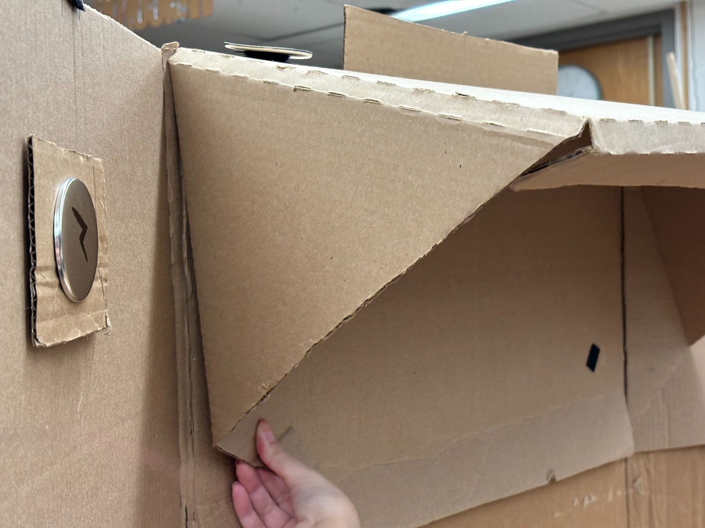

A
Sit-to-Stand Podium.
An accessible adjustable podium for the users existing podiums forget — where setup requires almost no thinking, and dignity is the default.
Designed for an assumed user.
Podiums are treated as standard equipment — designed around a user profile that excludes more people than it includes.
"The Average Speaker"
The default podium is designed around a narrow user profile: an average-height adult who can stand unassisted, walk to the front of the room, and adjust their position freely.
- Average adult height (5'4" – 6'0")
- Fully mobile, no assistive device
- Sets up own equipment if needed
- No additional accommodation required
The excluded speaker
Especially wheelchair users or speakers who require flexible height adjustment. These users frequently depend on others to set up the equipment — which strips away control in already high-pressure speaking situations.
- Wheelchair users (varied seat heights)
- Shorter or taller than average
- Limited upper-body strength
- Needs setup that does not require help
Users don't need "adjustable." They need "almost no thinking required to adjust."
The real problem is not missing features. It is the loss of independence that comes with needing help to set up a piece of furniture before you can speak.
Four specifications, one principle.
Each goal is grounded in a specific user need — not a generic accessibility checklist. Designing with, not for.
01
Independent Setup.
Configurable by the user with minimal physical effort — no need for someone else to adjust it first. The podium should always arrive ready to be claimed by whoever uses it next.
USE
02
Intuitive Height Adjustment.
Easy and fast height changes that require almost no learning curve. The interface should disappear behind the action — operate, don't deliberate.
MANUAL
03
Portable & Mobile.
Equipped with wheels for mobility across rooms, set up in different venues, and stored compactly when not in use. Accessibility shouldn't be locked to one location.
WHEELS
04
Wheelchair Accessible.
Sufficient width and clearance to accommodate wheelchair users — making accessibility the default, not an afterthought. Built into the geometry, not bolted on after.
BELOW
We built it out of cardboard.
Before designing anything digitally, we built a physical low-fidelity prototype to understand the real mechanics — height adjustment, wheelchair clearance, and the button placement that had to work with one hand.




The prototype used a single push-button on the side panel to trigger height adjustment — so a wheelchair user could operate it entirely without standing up or asking for help. The cardboard version proved the mechanism worked before we committed it to any final material.
More broadly, the task was to rethink how a common object could better support autonomy and dignity in public speaking.
Design is not neutral.
This project pushed me to rethink what "accessibility" actually means in design. Initially, I focused on adding adjustable features, but through empathy mapping and prototyping, I realized that true accessibility is about minimizing effort and enabling independence — not about giving users more knobs to turn.
Designing the height adjustment mechanism was particularly challenging, as I had to translate abstract ideas into simple, usable structures without an engineering background. Building a low-fidelity prototype helped me understand how users interact with physical objects, not just how they look on paper.
I also became more aware of the psychological dimension of design — how dependence on others can affect confidence in public speaking. This project taught me to prioritize user autonomy and simplicity over complexity, and to approach design problems from both a functional and experiential perspective.